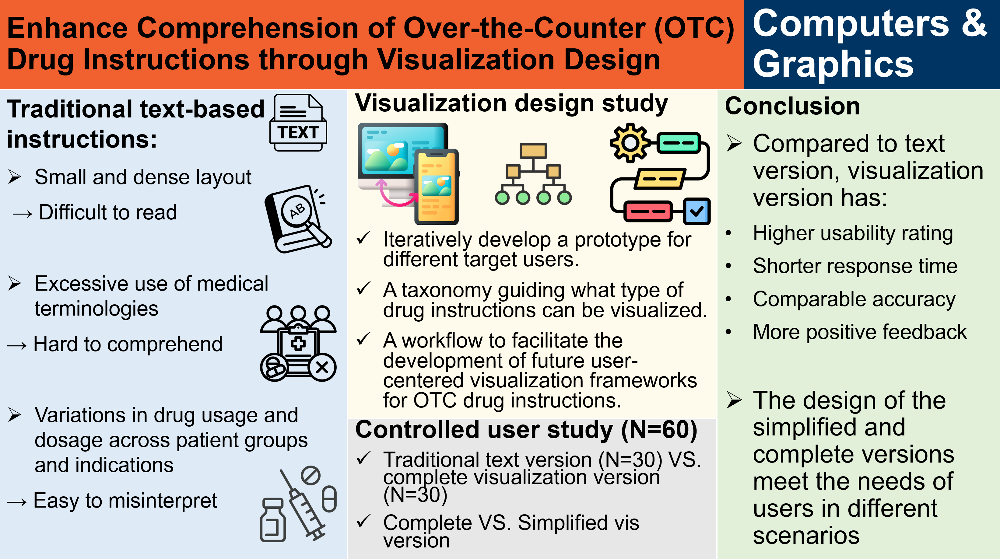
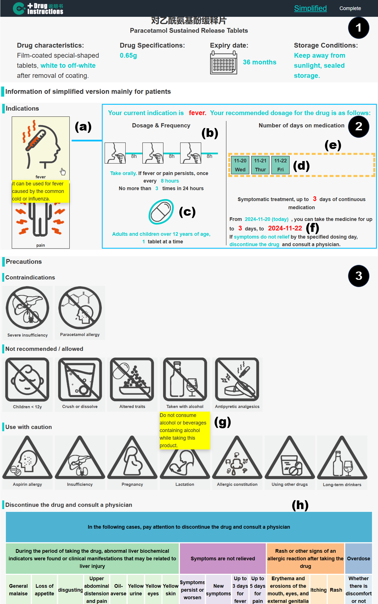
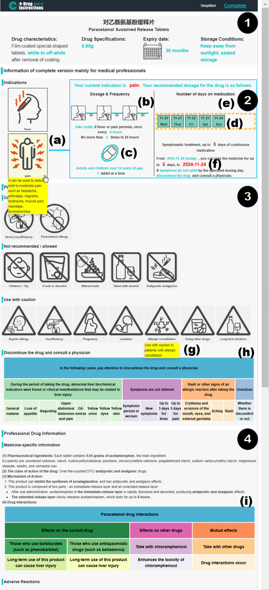
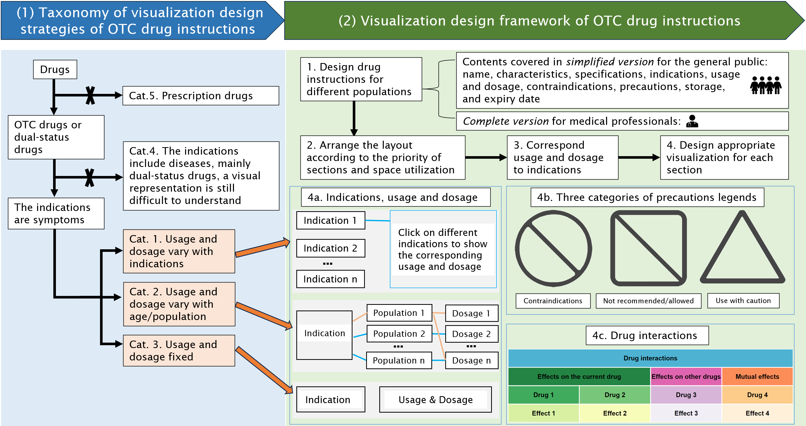

Drug instructions are crucial for guiding the rational use of medication. We conduct a visualization design study to enhance the comprehension of over-the-counter (OTC) drug instructions, targeting both the general public and medical professionals. We devise two tailored drug instruction designs for different audience groups through an iterative design process. A controlled user study reveals that our design outperforms traditional text-based instructions in terms of response time and usability, and the availability of two versions is also found to be beneficial. This study also motivates a taxonomy based on a systematic classification of OTC drug instructions sampled from an official drug database, which received positive expert feedback. Finally, this study summarizes a workflow for a visualization design strategy based on our design exploration and user study feedback, which can be generalized to other OTC drug instructions.




@article{Fan2026,
title = {Enhance comprehension of over-the-counter drug instructions for the general public and medical professionals through visualization design},
journal = {Computers \& Graphics},
volume = {136},
pages = {104587},
year = {2026},
issn = {0097-8493},
doi = {https://doi.org/10.1016/j.cag.2026.104587},
url = {https://www.sciencedirect.com/science/article/pii/S0097849326000580},
author = {Mengjie Fan and Katrin Angerbauer and Yinchu Cheng and Yingying Yan and Xiaohan Xu and Tianfu Wang and Michael Sedlmair and Yu Yang and Liang Zhou},
}